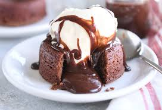
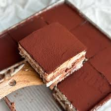

No result found
Chocolate Lava Cake
A decadent chocolate cake with a gooey molten center.
Ingredients:
- 1/2 cup unsalted butter
- 1 cup semisweet chocolate chips
- 1 cup powdered sugar
- 2 large eggs
- 2 large egg yolks
- 1 tsp vanilla extract
- 1/2 cup all-purpose flour
- Butter and cocoa powder for greasing ramekins
Instructions:
- Preheat oven to 425°F (220°C). Grease four ramekins with butter and dust with cocoa powder.
- Melt the butter and chocolate chips together in a heatproof bowl over a pot of simmering water.
- Stir in the powdered sugar until smooth.
- Whisk in the eggs and egg yolks until combined, then add vanilla extract.
- Fold in the flour until just combined.
- Divide the batter evenly among the ramekins.
- Bake for 12-14 minutes, until the edges are set but the centers are still soft.
- Let cool for 1 minute, then invert onto plates. Serve warm with vanilla ice cream.
Cheesecake
A creamy, smooth cheesecake with a buttery graham cracker crust.
Ingredients:
- 1 1/2 cups graham cracker crumbs
- 1/4 cup granulated sugar
- 1/2 cup unsalted butter, melted
- 4 (8 oz) packages cream cheese, softened
- 1 cup granulated sugar
- 1 tsp vanilla extract
- 4 large eggs
- 1 cup sour cream
- 1/4 cup all-purpose flour
Instructions:
- Preheat oven to 325°F (160°C). Mix graham cracker crumbs, sugar, and melted butter in a bowl.
- Press the mixture into the bottom of a springform pan to form the crust.
- In a large bowl, beat the cream cheese until smooth.
- Add sugar and vanilla extract, and mix until combined.
- Beat in eggs, one at a time, then add sour cream and flour, mixing until smooth.
- Pour filling over the crust in the springform pan.
- Bake for 50-60 minutes, until the center is set and the edges are slightly puffed.
- Cool completely, then refrigerate for at least 4 hours before serving.
Tiramisu
An Italian classic with layers of coffee-soaked ladyfingers and creamy mascarpone.
Ingredients:
- 6 large egg yolks
- 3/4 cup granulated sugar
- 1 cup heavy cream
- 1 cup mascarpone cheese
- 1 cup brewed espresso, cooled
- 24 ladyfingers
- Cocoa powder for dusting
Instructions:
- In a bowl, whisk egg yolks and sugar until thick and pale.
- In a separate bowl, whip heavy cream until stiff peaks form, then fold into the egg mixture.
- Fold in mascarpone cheese until smooth.
- Dip ladyfingers briefly in espresso and arrange in a single layer in a dish.
- Spread half of the mascarpone mixture over the ladyfingers.
- Repeat with another layer of dipped ladyfingers and the remaining mascarpone mixture.
- Cover and refrigerate for at least 4 hours or overnight.
- Dust with cocoa powder before serving.